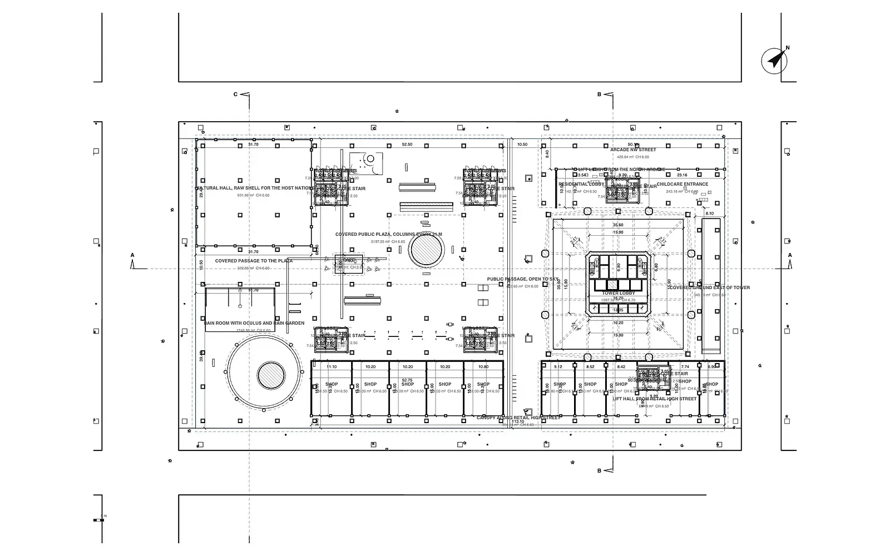

Describe it. Amphion builds it in Revit.
Amphion for Revit is an AI plugin and productivity add-in for Autodesk Revit 2023, 2024, 2025 and 2026 on Windows. Its AI agent creates and edits native Revit elements from text: levels, walls, floors, roofs, doors, windows, rooms, sheets and parameters. Ten fast tools handle everyday chores such as batch creating sheets, renumbering rooms and exporting all sheets to PDF. The first 5 AI edits are free, the fast tools are free for 30 days, then it costs 9 € per month including 300 AI edits. Download: AmphionRevit.zip (version 1.0.0).

Things you can ask the Revit AI agent
- “Create levels every 3.2 m up to Level 5 and floor plans for each.”
- “Draw the exterior walls of a 20 x 12 m block on Level 1, finish face exterior, and a 25 cm floor.”
- “Put a 1.2 x 1.4 m window every 3 m in the selected wall, sill 0.9 m.”
- “Create rooms in all enclosed areas on Level 2 and tag them.”
- “Make sheets A101 to A105 with the floor plans on them.”
- “Set Fire Rating to EI30 on all doors on Level 2.” · “Rename all views from ‘Level’ to ‘Floor’.”
Fast tools: Revit chores in one click
No AI needed. They run on your computer and each one is a single Undo step.
| Tool | What it does |
|---|---|
| Batch Sheets | Batch create sheets in Revit from a pasted list, a CSV file or a range like A101-A120, with the title block you choose. |
| Renumber | Renumber rooms in Revit, and doors, windows or sheets, by clicking them in order or by position (rows or columns). Prefix, start, digits, step. |
| Sheets to PDF | Export all sheets to PDF in Revit with one click: one file per sheet named “Number - Name”, or one combined PDF. |
| Tag Rooms | Tag all untagged rooms in the active plan or section. |
| Align Tags | Align tags left, right, top, bottom or centre, or distribute them evenly. |
| Dim Walls | Quick dimension of selected walls: one dimension string through all faces of the parallel walls. |
| Rename Views | Rename views, sheets or templates by find and replace (with regular expressions and tokens like {level} and {scale}) with live preview. |
| Copy Templates | Copy view templates from another open project. |
| Select Similar | Select all elements whose parameter has the same value as the picked one, in the view or the whole project. |
| Purge Report | List unused families and types, unassigned view templates, views not on sheets and unplaced rooms. Deletes nothing; save as CSV. |
Pricing
| Option | Price | Includes |
|---|---|---|
| Free | 0 € | 5 AI edits and all fast tools for 30 days, no account needed |
| Monthly | 9 € per month | 300 AI edits per month and all fast tools. Cancel anytime. |
| Yearly | 90 € per year | Same as monthly, two months free |
| Extra credit | Packs of 5 €, 15 € or 40 € | AI edits beyond your plan; credit never expires |
An AI edit is one request, however many steps Amphion needs for it. If an edit fails before it starts, it is not charged. Prices plus VAT where applicable. An Amphion licence includes Amphion for Revit.
Install
- Close Revit and download AmphionRevit.zip.
- Right-click the zip › Properties › tick Unblock, then extract it.
- Double-click
install.bat. It installs Amphion for every Revit 2023 to 2026 on this PC. - Start Revit, choose Always Load if asked, and open the Amphion tab.
- Open the folder of your Revit year in the zip, for example
2025. - Copy its contents to
%AppData%\Autodesk\Revit\Addins\2025\. - You should now have
Amphion.addinand the folderAmphionthere. - Start Revit. To uninstall, delete both again.
Questions
Which Revit versions does Amphion support?
Revit 2023, 2024, 2025 and 2026 on Windows. The download contains one folder per Revit year with the right build (.NET Framework 4.8 for 2023 and 2024, .NET 8 for 2025 and 2026).
How much does Amphion for Revit cost?
The first 5 AI edits are free and the fast tools are free for 30 days. After that a subscription costs 9 € per month or 90 € per year plus VAT and includes 300 AI edits per month and all fast tools.
Can I undo what the AI did?
Yes. Each AI step is one entry named “Amphion AI” in Revit's Undo list, and the Undo AI edit button takes back the whole last request. Every fast tool is a single Undo entry too.
How do I batch create sheets in Revit?
Click Batch Sheets on the Amphion tab, paste a list of sheet numbers and names (or load a CSV, or write a range like A101-A110), pick a title block and click Create sheets. Existing numbers are skipped.
How do I renumber rooms in Revit by clicking?
Click Renumber, choose Rooms and “Click them one by one”, set prefix, start number and digits, then click the rooms in the order you want. Press Esc to finish. Doors, windows and sheets work the same way, or by position from top left to bottom right.
How do I export all sheets to PDF in Revit at once?
Click Sheets to PDF and choose one PDF per sheet (named “Number - Name”) or one combined PDF. Amphion uses Revit's own PDF export and opens the folder when it is done.
Is my Revit model uploaded?
No. The fast tools work entirely on your computer. The AI agent sends only what it needs for the request: a compact list of levels, types and selected elements, and a view image when it checks its work. Nothing is used for training.
Does it work on Mac?
Revit only runs on Windows, so Amphion for Revit is a Windows add-in. On Mac, Amphion for Rhino works natively.
Amphion and other Revit add-ins
| Type of tool | What it does |
|---|---|
| AI agent (Amphion for Revit) | Builds and edits native Revit elements from text, then checks the result in the view |
| Productivity toolkits | Batch sheets, renumbering, tags and exports; Amphion includes the everyday ones |
| AI rendering plugins | Render the Revit view as an image; they do not model |
| Dynamo and pyRevit scripts | Automate anything, but someone has to write and maintain the script |
Also from Amphion: Amphion for Rhino (AI modeling in Rhino 7 and 8) and Amphion Tools.